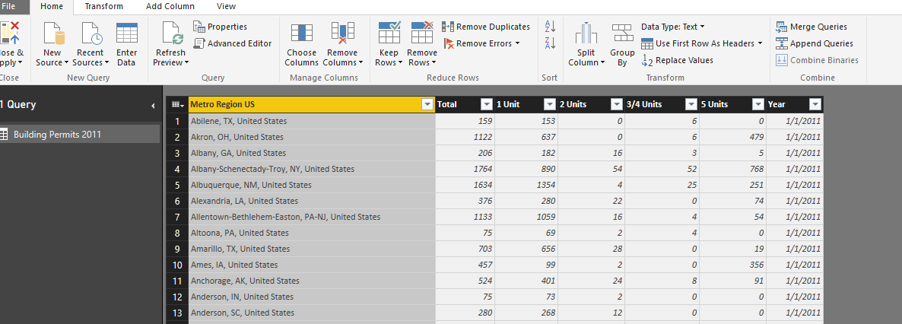

As part of the Commerce Data Usability Project, Microsoft Chicago in collaboration with the Commerce Data Service has created a tutorial that introduces PowerBI as a way to explore Commerce data. If you have question, feel free to reach out to the Commerce Data Service at DataUsability@doc.gov.
In the first tutorial we learned how to use Power BI Desktop app to access data and build data models. In the second tutorial we developed a workflow for building reports and publish dashboards, then wrapped up with importing those models and reports into the Power BI web service, where reports can be published to the web as well as build and share dashboards.
In this final tutorial, we will learn to use Power BI Desktop app to transform data from a raw text file into usable information. The workflow is as follows:
- Import text file of data from the US Census Bureau
- Build simple queries to append data
- Merge multiple data sources
GET THE DATA
To get started, we first need to get the data, which has been made available through two different methods.
- Via the Census Website. The first will be a text file that was downloaded from the US Department of Commerce US Census site … Click on Home, and click Get Data. This will bring up the most common formats. Now you will see an option for a text file. Navigate to the file Building Permits 2011-Text, which you downloaded as part of your demo folder.
- Via Github. Data has been downloaded and placed in the 'data' folder in the Github repo
CLEANING DATA
As we did in Part 1, we will need to do some minor cleansing of this data file. We can do this before we even load it. You will see a preview of this file like this:
Click on Edit. From here, you will see several columns that we will not need, and at least one that we want to add (the country). First, click on the first two columns (labeled "CSA" and "CBSA" respectively). Once they are selected, click on Remove Columns from the ribbon.
Next, we have some cleaning to do in the Name column. Let's start by renaming it to Metro Region. Right click on the column name, and click on Rename. Call it "Metro Region". Notice that there are some random "*" characters in this column. They are easily removed all at once. Click on "Replace Values" from the Transform Section of the Home tab on the ribbon. Replace the "*" character and leave the "Replace With" field blank. Click on OK, and the asterisks disappear.
CREATING + MERGING COLUMNS
Now, we are going to add United States to the Metro Region column. The way we will do this is by first creating a column to hold the country name, and then merging that with the Metro Region column. We can create and populate the Country column in one step. First, click on the Add Column tab on the ribbon. The first button is Add Custom Column. This allows you to add a column that contains a formula, values from other columns, etc. In this case, we are going to create one that is pre-populated with text. Under "New Column Name" call it Country. Under "Custom Column Formula" place your cursor next to the = and type ", United States" (including the quotes). Now you will see you have your column created and all that is left to do is to merge it with the Metro Region column.
For the merge, the order you select the columns to be merged is important. They will be merged in the order you select them. So first, select the Metro Region column. Then, holding the Crtl button down, click the Country button. The choose Merge Columns in the From Text section of the ribbon (still in the Add Column tab). Now you have a column with real region names, such as "Allentown-Bethlehem-Easton, PA-NJ, United States". If you choose to map these regions later, you are in great shape. At this point, you may remove the Metro Region column and the Country column.
We want to make this readable, so we will move the Metro Region US column as the first column. To do this, select that column and drag it to the left so that it is the first column. It should look like this:
Now, we will bring in four data sets, in three different formats, and use them to create our first query: an append query.
QUERY?
The first thing we need to do is to connect to the data that we want to use to build our query. Our query will bring together all of the data sets that differ only by the year. There is a text file that we just worked with for Building permits in 2011; there is an Excel workbook for the building permits in 2012; there is a CSV file for the building permits in 2013; and another Excel workbook for building permits in 2014. We are going to combine them into a single query representing four years' worth of data.
Right now, we have only one query, the one built from the 2011 data (which was text):

Click on New Source to build the next query, the building permits in 2012. This time, choose Excel as the source. Navigate to Building Permits 2012 and load it. Select the first column (Metro Region US) and choose Replace Values. Replace the "*" character with a blank.
Click on New Source again. This time, we will load a CSV file. Navigate to Building Permits 2013 and load it. Again, replace the "*" character with a blank. Our final file will be another Excel file. Click on New Source/Excel and navigate to Building Permits 2014. Load it, and again replace the "*" value with a blank.
Now you should have 4 queries in the left pane. With the Building Permits 2014 selected, click on Append Queries in the Combine section of the Ribbon (Home tab). This will allow you to take tables that have the exact same column names and bring them together. You can select two tables and append them, or three or more. Choose 3 or more. Click ok. Now you have a single table with all of the years. This will make it easier to do analysis by year. It also makes it easy to create visuals in other software, like 3D maps over time in Microsoft Excel.
MERGE!
More often, you will want to combine tables with different columns. For example, let's say that you want to take the US Census table that shows the population of Metro Areas in 2012, and combine it with the Building Permits Table for 2012. You will want to combine the population estimate where the metro area matches.
The US Census uses a useful measure called CBSA or Core Based Statistical Area. CBSA is a U.S. geographic area that centers on an urban center of at least 10,000 people and adjacent areas. It assigns a value to each metro area. In your demo folder is an Excel file for the population estimate that uses the CSA (it was taken from U.S. Census population estimate totals ). The demo folder also includes the original Building Permits 2012 data that included CBSA. Start a new Power BI session. Click on New Source and choose Excel. Navigate to the population data, which is stored in a file called CBSA-EST2012-01 (choose the first table). It may not all be obvious, but you have to do a little cleansing. Click on Edit instead of Load. The CBSA is in text format! It should be a number to match what is in the Building Permit spreadsheet (which we will load later).
First, give the columns meaningful names. An easy way to do this, since you have a column that could represent headings, is to click on Use First Row As Headers:
Next, select the CBSA column. Change the Data Type from Text to Whole Number. You will see the column of numbers go from left justified to right justified, a sure confirmation that they are numbers:
It is also more clear if you change the column heading 2012 to Population.
Now you are ready to bring in your second table, the Building Permits from 2012. Click on New Source/Excel and navigate to the Excel file called Building Permits 2012 with CBSA. When it is in the Query Editor, remember to remove those "*" characters in the Name column. We will stay on this table and add the population data from the Census table.
Click on the Merge Queries button on the ribbon in the Combine section.
Now you are asked what table you want to get the new data from. You only have one other table, so choose the 2012 Census data table. It now needs to know which column has the common data. It's the CBSA! You could also use the metro name if you are 100% certain that they are the same, but CBSA is safer, so select CBSA in both tables, then choose OK.
You now have a new column in your table. You can decide what columns from the Census table you would like to include in your permit table.
Select the column called NewColumn. Power BI can do its best to cleanse the data before you expand it by clicking on Remove Errors from the ribbon. Do this. Clicking on the expand button on the right side of the new column heading will give you your choice of new columns (notice that you can choose more than one).
Deselect everything but population. Click on OK. Now you will have a table that includes not only your building permit data from 2012, but census data for every region for which census data exists.

Once you know how to do these two types of queries (Append and Merge) you can expand into other areas of Power BI. You can create custom queries from multiple tables. You can create custom columns that are calculated. And, of course, you can use the other features you learned from the other Power BI tutorials to visualize, report on, and share that data.